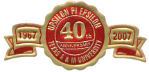

Student Organizations & Activities
The Slippery Rock Computer Science Department takes great pride in their student driven organizations. Both the Upsilon Pi Epsilon Society and the Computer Technology Club are excellent opportunities for students to expand computing knowledge and educational prowess in their field. Please feel free to explore their respective sites to learn more about how YOU can become a member of the best student driven organizations on campus.
